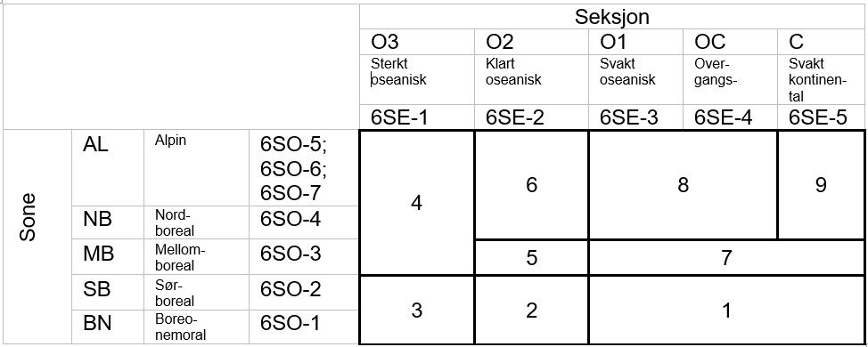

# file path to locally stored data
pathD <- "/data/R/GeoSpatialData/BiogeographicalRegions/Norway_PCA_klima/Original/20170614_Bioklima/20170614_Bioklima.gdb"
# read in the data and convert to tibbles for easy joins
soner <- sf::read_sf(pathD, layer = "Soner2017") |>
as_tibble() |>
mutate(Sone = case_when(
# combining boreonemoral and south-boreal
Sone_kode %in% c("6SO-1", "6SO-2") ~ "6SO-1-2",
# combining north-boreal and alpine
# I checked the WMS data and there the alpine zones are all combined in 6SO-5
Sone_kode %in% c("6SO-4", "6SO-5") ~ "6SO-4-5",
.default = Sone_kode
))
# unique(soner$Sone)
# I check the extents against the geographical region map to ensure no big data holes
# and it looks ok.
seksjoner <- sf::read_sf(pathD, layer = "Seksjoner2017") |>
as_tibble() |>
mutate(Seksjon = case_when(
# combining sections O1 and OC
Seksjon_ko %in% c("6SE-3", "6SE-4") ~ "6SE-3-4",
.default = Seksjon_ko
))
# unique(seksjoner$Seksjon)
# join based on SSB IDs and convert to sf object again
BCreg <- dplyr::left_join(soner , seksjoner |> select(-Shape), by = join_by(SSBID)) |>
mutate(BCregion = paste(Seksjon, Sone)) |>
select(SSBID,
Sone,
Seksjon,
BCregion,
Shape)3 Bioclimatic regions
Here we prepare a custom version of the bio-climatic regions of Norway (Bakkestuen et al. 2008). The regions are made up of the different combinations of zones and sections. This yields 23 unique types. For our purpose we want to combine some regions, and we therefore end up with 11 types (Figure 3.1) The data is in 1km^2 vector squares an there is a column called ´SSBID´ which refers to the SSB1000 grid.

This custom map will be used for stratifying the samples, i.e. givem them equal importance in the sampling. We see from Figure 3.2 that this means amongst other things that we down-weight the relative sampling effort in weakly oceanic (inlc. the transitional ‘OC’ section) parts of the north-boreal and alpine zones. They make up about 1/3 of the total area in Norway, but when we stratify the sampling, they only get the same sampling effort as the other strata.

3.1 Setup schema
Setting up a new schema called helper_variables. Here we can store helper variables that we use to either stratify or balance our spatial sample.
new_schemas <- "CREATE SCHEMA helper_variables"
dbSendQuery(con, new_schemas) Write queries to grant read only access to all.
priv <- "ALTER DEFAULT PRIVILEGES IN SCHEMA helper_variables GRANT SELECT ON TABLES TO ag_pgsql_ano_moduler_ro"
priv2 <- "ALTER DEFAULT PRIVILEGES IN SCHEMA helper_variables GRANT SELECT ON TABLES TO ag_pgsql_ano_moduler_rw"
priv3 <- "ALTER DEFAULT PRIVILEGES IN SCHEMA helper_variables GRANT SELECT ON TABLES TO ag_pgsql_ano_moduler_admin"
priv4 <- "GRANT USAGE ON SCHEMA helper_variables TO ag_pgsql_ano_moduler_admin"
priv5 <- "GRANT USAGE ON SCHEMA helper_variables TO ag_pgsql_ano_moduler_rw"
priv6 <- "GRANT USAGE ON SCHEMA helper_variables TO ag_pgsql_ano_moduler_ro"
dbSendStatement(con, priv)
dbSendStatement(con, priv2)
dbSendStatement(con, priv3)
dbSendStatement(con, priv4)
dbSendStatement(con, priv5)
dbSendStatement(con, priv6)3.2 Define table properties
First we define the table properties
q1 <- "create table helper_variables.bioclimatic_regions (
ssb1000id character varying(50) primary key,
geom geometry(polygon,25833)
);"
# indices makes the database work faster. It should be added to all tables that are looked up frequently
q2 <- "create index on helper_variables.bioclimatic_regions using btree(ssb1000id);"
q3 <- "create index on helper_variables.bioclimatic_regions using gist(geom);"# sending the queries:
dbSendStatement(con, q1)
dbSendStatement(con, q2)
dbSendStatement(con, q3)I set the geom column to be *polygon’, but it’s actually a multipolygon. This could cause errors down the line.
st_geometry_type(BCreg, by_geometry = F)I therefore ran this code in DBBeaver
ALTER TABLE HELPER_VARIABLES.BIOCLIMATIC_REGIONS
ALTER COLUMN geom TYPE geometry(MULTIPOLYGON, 25833)3.3 Write to db
Then I will write the file to the database.
# turn back into sf object
BCreg <- BCreg |>
st_as_sf()
# check CRS
st_crs(BCreg) #32633 (we want 25833 i.e. ETRS89 / UTM zone 33N)
# transform
BCreg <- BCreg |>
st_transform(25833)
BCreg <- BCreg |>
select(
ssb1000id = SSBID,
BCregion,
Shape
)
# special code to rename the geometry
st_geometry(BCreg) <- "geom"
write_sf(BCreg, dsn = con,
layer = Id(schema = "helper_variables", table = "bioclimatic_regions"),
append = T)I also forgot to add a column, so I add it now:
q4 <- "ALTER TABLE helper_variables.bioclimatic_regions ADD BCregion character varying(50)"
dbSendStatement(con, q4)And then update the table with data as well
write_sf(BCreg, dsn = con,
layer = Id(schema = "helper_variables", table = "bioclimatic_regions"),
append = F)I also keep a version on the R: server
path_store <- "/data/P-Prosjekter2/412421_okologisk_tilstand_2024/Data/bioclimaticRegions.gpkg"
write_sf(BCreg, dsn = path_store,driver = "GPKG")list.files("/home/")
Bakkestuen, V., Erikstad, L., and Halvorsen, R. 2008. Step-less models for regional environmental variation in Norway. Journal of Biogeography 35(10): 1906–1922. doi:10.1111/j.1365-2699.2008.01941.x.